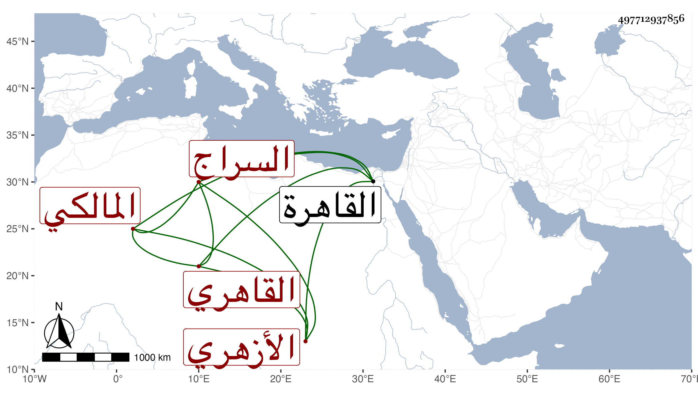

0902Sakhawi.DawLamic.ITO20230111-ara1.EIS1600.497712937856
Biography ID: 497712937856
360
عمر بن محفوظ بن حسن بن خلف السراج القاهري الأزهري المالكي ولد بعد سنة خمس وسبعين وسبعمائة تقريبا بالقاهرة وقرأ بها القرآن واشتغل بالنحو والفقه على الشهاب المغراوي وبالفقه فقط على الزين قاسم النويري وبالنحو وحده على الشهاب الصنهاجي ، وحج في سنة اثنتي عشرة ثم بعدها وجاور سنة اثنتين وعشرين ، وكان المحب محمد بن مفلح السالمي اليماني أخاه من الرضاع فسمعه كثيرا على التنوخي والشرف بن الكويك وغيرهما ثم نقله إلى خانقاه سرياقوس فقطنها وقرره في مكتب وقفه للأيتام واستمر هناك حتى مات في حدود سنة خمسين وكان جيدا متثبتا مشهورا بذلك بين أهلها لقيه البقاعي وغيره .
